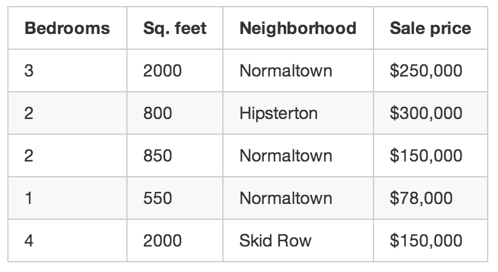
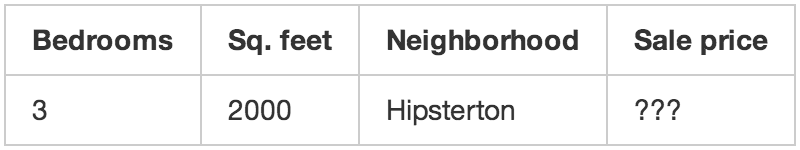

Nadgledano učenje
Nadgledano učenje pomaže ljudima koji se bave prodajom nekretnina. Oni isprogramiraju aplikaciju koja procenjuje vrednost kuće u nekom kraju na osnovu veličine, naselja u kom se nalazi i za koliko su para prodate slične kuće. Tokom tri meseca ova aplikacija zapisuje svaki put kada neko proda kuću u vašem kraju i za svaku od njih zapiše gomilu detalja(kao što su broj spavaćih soba, površina, kraj u kom se nalazi i konačnu prodajnu cenu).Ovi podaci se zovu "trening podaci" i pomoću njih napravimo program koji može da proceni koliko vredi bilo koja kuća u datom naselju. Ovo se zove nadgledano učenje jer smo znali odgovor na pitanje i mogli smo da s vratimo unazad kako bismo razumeli logiku.
 Nenadgledano učenje
Kod nenadgledanog učenja mi ne znamo tačno sve potrebne podatke. Kada nemamo sve podatke ipak možemo da napravimo algoritam koji automatski identifikuje različite tržišne segmente među našim podacima. A možemo i namestiti da se automatski identifikuju sve kuće koje se mnogo razlikuju od drugih(ako su ogromne, to znači d je i zarada veća).